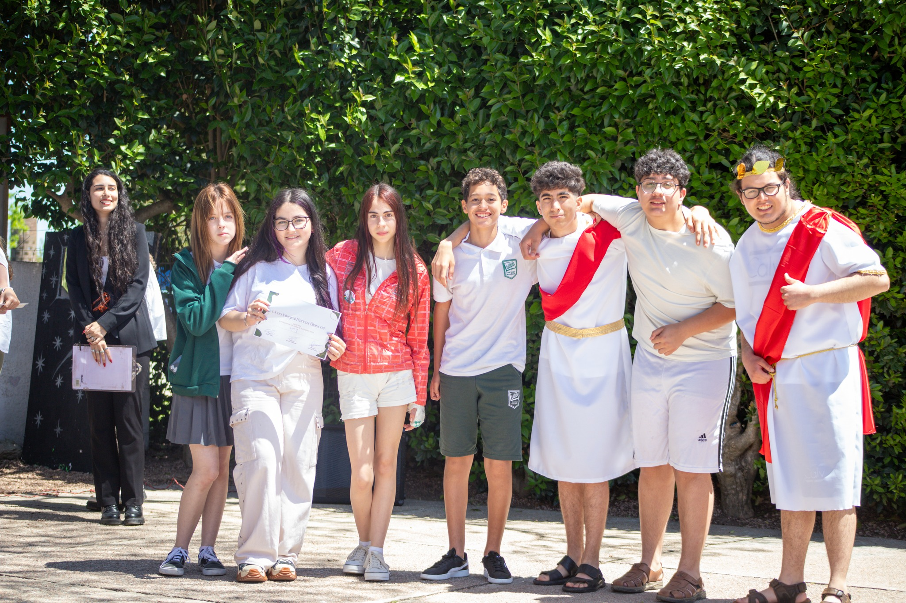
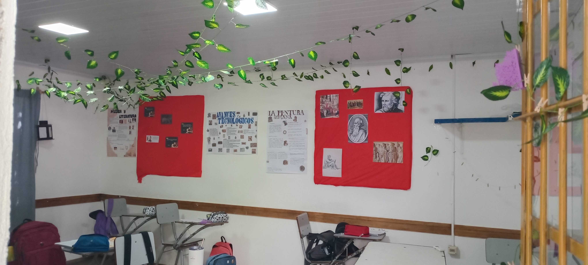

¡Bienvenidos al 9no 1!
Holiss, somos tus compañeros de 9no 1 y en esta instancia vamos a presentarte nuestra clase.
Los nombres de nuestros compañeros son:
- Mateo Araújo: es un compañero estudioso, responsable, que se caracteriza por ser muy amable. Su apodo es "Mate". Tiene 15 años. Su cumpleaños es el 7 de agosto. Es de Leo. Su hobby es principalmente tocar el bajo.
- Micaela Blanco: es una compañera con una fuerte decisión que siempre defiende a los demás cuando ocurren situaciones injustas. Su apodo es "Mica" aunque sus amigas la llaman "Micu". Tiene 14 años. Su cumpleaños es el 17 de enero. Su signo es Capricornio. Su actividad favorita es dormir.
- Lautaro Chessa: es un compañero estudioso, gracioso e inteligente. Su hobby es tocar la guitarra. Tiene 15 años. Su cumpleaños es el 1 de octubre. Su signo es libra. Su apodo es "Lau".
- Ezequiel Dominguez: es un buen compañero, siempre dispuesto a ayudar a los demás, es divertido y se destaca por dibujar muy bien. Tiene 15 años. Su cumpleaños es el 24 de junio. Su signo es cáncer. Su apodo es "Eze".
- Joaquin Filips: es un compañero amable que se esfuerza mucho a diario y ayuda a los demás. Su talento es dibujar muy bien y le gustan las caricaturas. Tiene 15 años. Su cumpleaños es el 16 de noviembre. Su signo es Escorpio. Su apodo es "Joaco".
- Valentina Maubrigadez: es muy buena compañera, es estudiosa, inteligente y amable. Toca muy bien el piano. Tiene 14 años. Su cumpleaños es el 5 de febrero y su signo es acuario. Su apodo es "Val" o "Vale" aunque sus amigas la llaman "Valu"
- Evelyn Mieres: es una compañera muy amable y con una personalidad muy tierna. Es una gran amiga que se preocupa mucho por todos. Toca muy bien el violín. Tiene 15 años. Su cumpleaños es el 4 de septiembre. Su signo es virgo. Su apodo es "Eve" pero sus amigas la llaman "Evu".

Sección de MundiLibb:
Es un evento anual realizado por el Liceo Integral en donde cada grupo debe cumplir con una serie de requisitos dentro de un tema específico para cada grupo dentro de un tema macro para todo el liceo.
El tema general de este año 2025 fue la resiliencia. A 9no 1 le tocó "Epicteto", un filósofo romano perteneciente al estoicismo en el siglo 1 d.c.
Este año, nuestra clase realizó una representación artística que incluía una actuación de una clase de Epicteto, en donde Ezequiel interpretó al filósofo romano. Valentina fue la presentadora de la actuación, mientras que el resto de compañeros fueron los discípulos de Epicteto

Para finalzar la interpretación, realizamos un baile con la canción "Staying Alive" en honor a la resiliencia


En cuanto a la decoración, nuestro salón estuvo ambientado en la época de Epicteto, con decoraciones como hojas, columnas jónicas, faroles, etc

Además, realizamos un souvenir gastronómico saludable de la época: brochetas de fruta